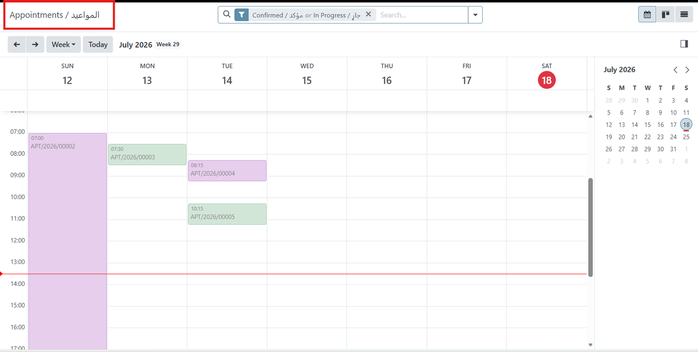
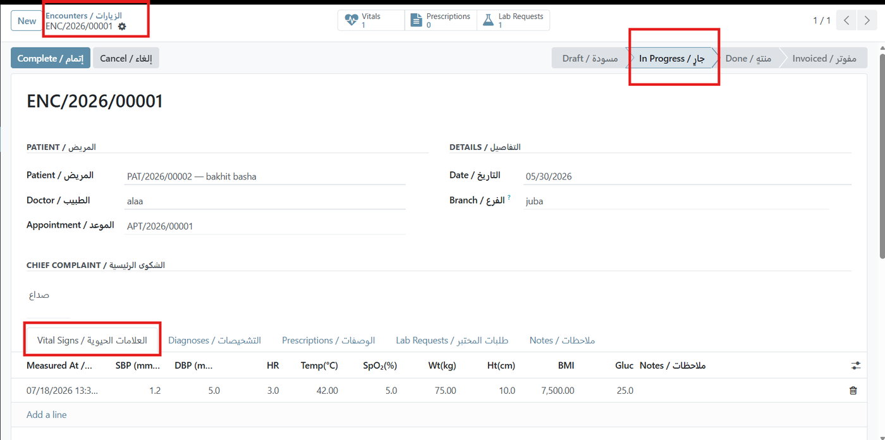
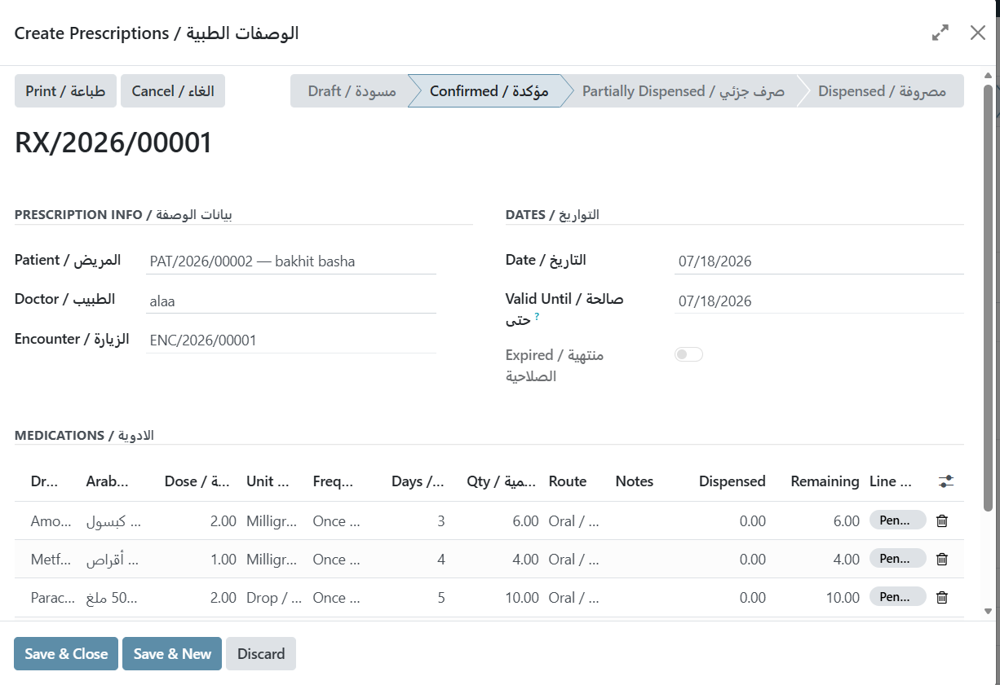
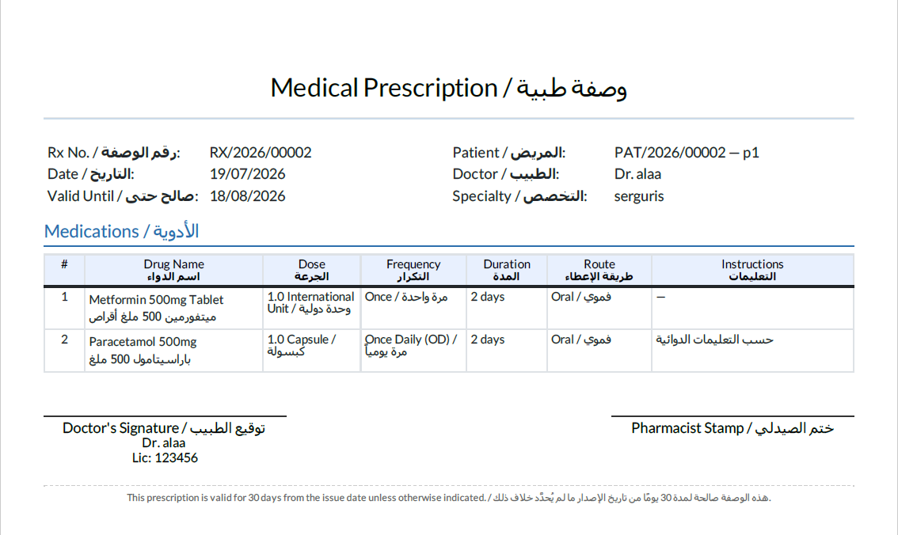

QUINZE Health Clinic
Patients, appointments, encounters, prescriptions and automatic invoicing — the clinical core of the suite.
Overview
The clinical workflow layer: register patients, schedule appointments without conflicts, record the visit with vitals and diagnoses, issue prescriptions, request lab work, and invoice — all inside Odoo.

Encounter Workflow

Key Features
Patient Records
Full medical history, allergies, chronic conditions and computed age, linked one-to-one with res.partner.
Conflict-Free Scheduling
Doctor and room double-booking is blocked at save time. Calendar and Kanban views included.
Clinical Encounters
Capture vital signs, ICD-10 diagnoses and clinical notes in a single form.
Automatic Invoicing
Completing an encounter posts an account.move using the specialty's consultation product and price.
Prescriptions
Drug, dose, frequency, duration and route, with live dispensing status fed back from the Pharmacy module.
Patient Portal
Patients sign in to the standard Odoo portal to view their own appointments and prescriptions.


Bilingual Prescription PDF
Prescriptions print with every label, dose unit, frequency and route shown in English and Arabic side by side, so the same document serves the pharmacist and the patient.

REST API Available
A companion module, QUINZE Health REST API, exposes authenticated JSON endpoints for patients, appointments and prescriptions — list and create appointments, read a prescription with its full line detail, and drive it all from a mobile app or booking site. Sold separately.
عيادة نظام QUINZE الصحي
طبقة سير العمل السريري داخل أودو:
- ملفات المرضى مع التاريخ المرضي والحساسيات والأمراض المزمنة
- جدولة مواعيد تمنع تعارض الأطباء والغرف تلقائياً
- تسجيل الزيارة: العلامات الحيوية، التشخيص، الملاحظات السريرية
- إصدار فاتورة تلقائياً عند إنهاء الزيارة بسعر التخصص
- وصفات طبية مع تتبع حالة الصرف والكمية المتبقية
- بوابة المريض لعرض مواعيده ووصفاته
Technical Information
| Item | Value |
|---|---|
| Odoo Version | 17.0 Community & Enterprise |
| Dependencies | quinze_health_base, account, calendar, portal |
| License | OPL-1 |
| Price | €149 |
| Languages | English and Arabic (ar_001), bilingual labels and reports |
| Automated Tests | Included |
Email: amarnew198611@gmail.com · WhatsApp: +966 55 167 3871
Includes 12 months of bug-fix support and version updates within Odoo 17.0.